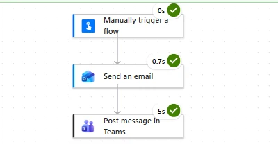
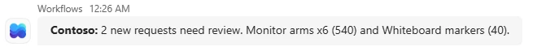

- Power Automate
- Level 3 · Triggers and connectors · 4 of 7
Outlook and Teams notifications
Most flows end by telling someone something. The two everyday channels are an email through Office 365 Outlook and a message through Microsoft Teams.
The demo flow
WhatOne action sends an email, one posts a Teams message.
WhyNotifications are how people learn a flow did something; the channel and sender decide whether they read it.
DemoTell the team that 2 new requests need review.
One summary, two channels
Requests as text: Monitor arms x6 (540)Whiteboard markers (40)
Email
Send an email (V2)
Inbox: Contoso: 2 new requests need review
Teams
Post message in a chat or channel
Chat from Workflows

The email

Send an email (V2) needs To, Subject and Body. The Body accepts HTML, so lists, bold text and tables (from Create HTML table) all work.
The Teams message: who posts, where

| Post as | Post in | Use when |
|---|---|---|
| Flow bot | Chat with Flow bot | A private notification to one person |
| Flow bot | Channel | A team update everyone should see |
| User | Group chat or channel | It should look like it came from a person (the connection owner) |
Watch out
- Keep messages short and link to detail: a Teams message is limited to about 28 KB including HTML.
- Emails and post as user messages come from the connection owner.
Shared mailboxes and message options
A shared-mailbox process
Trigger: When a new email arrives in a shared mailbox (V2)
Is it a reply?
startsWith(subject, 'RE:')Yes
Trigger condition stops it
No
Process it
Reply with Send an email from a shared mailbox (V2)
| Need | Setting |
|---|---|
| Send as the shared mailbox | The connection's account needs Send As on the mailbox |
| Copy people in | CC and BCC under Show all; separate with ; |
| Flag as urgent | Importance: High |
| Replies go elsewhere | Reply To: e.g. the shared mailbox |
Use the newest version of an action (V2, V3); older ones exist only so old flows keep working.
New to this? Start from the basics optional
Connection owner: the account a connection signs in as.
Flow bot: the Workflows app in Teams.
Common mistakes
- Sending from a personal account for a team process.
- Long messages instead of a link.
- No trigger condition for replies, so every reply restarts the flow.